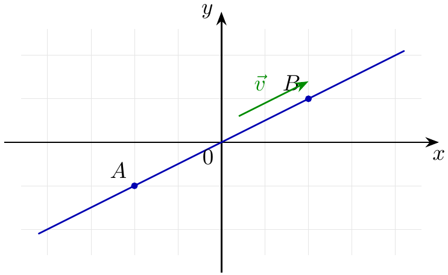
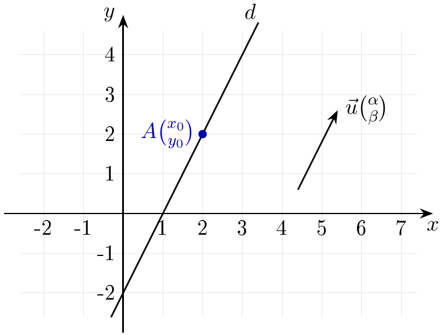
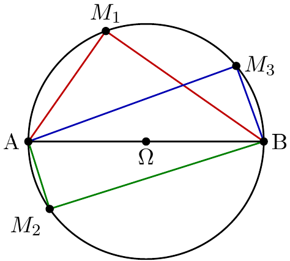
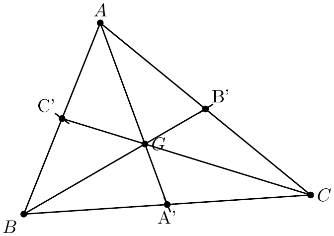
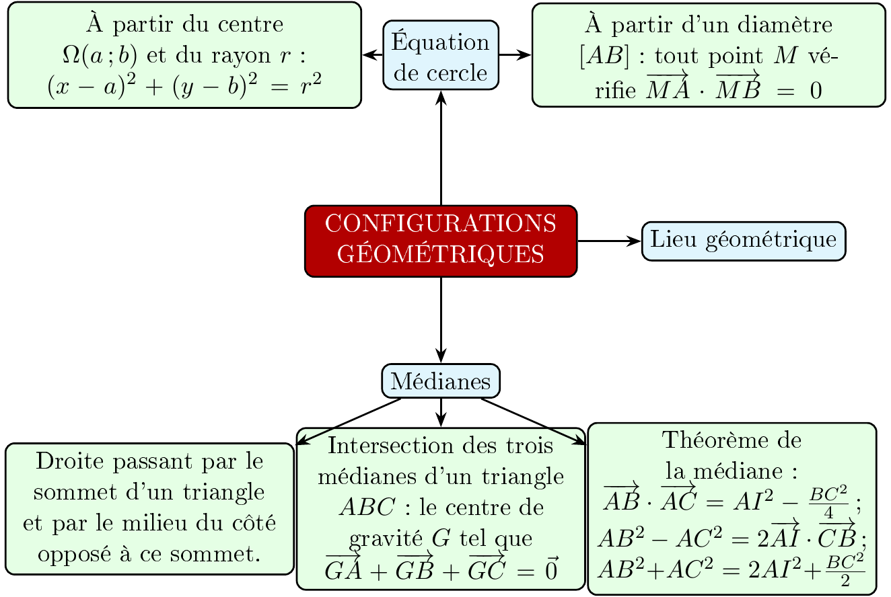

Chapitre 12 : Géométrie
Première spécialité · Chapitre 12 — Géométrie · cours de Frederik de Peyrelongue
I. Équation de droite
Définition – équation cartésienne d'une droite
Soient $A$ et $B$ deux points du plan : on appelle droite $(AB)$ l'ensemble des points $M$ du plan alignés avec les points $A$ et $B$.
On appelle vecteur directeur de la droite $(AB)$ tout vecteur $\vec{v}$ qui a la même direction que la droite $(AB)$.

Soit $A$ un point et $\vec{u}$ un vecteur ; l'ensemble des points $M$ du plan tels que les vecteurs $\vect{AM}$ et $\vec{u}$ soient colinéaires forme une droite passant par $A$ et de vecteur directeur $\vec{u}$.
Colinéarité : deux vecteurs non nuls $\vec{u}$ et $\vec{v}$ sont colinéaires si, et seulement si, $\det\left(\vec{u}\,;\vec{v}\right)=0$.
Soit $D$ une droite du plan muni d'un repère $\left(O\,;\vec{\imath}\,,\vec{\jmath}\right)$. On appelle équation cartésienne de la droite $(D)$ toute équation vérifiée par, et uniquement par, les coordonnées $(x\,;y)$ des points de la droite $(D)$.
Soit $\left(O\,;\vec{\imath}\,,\vec{\jmath}\right)$ un repère du plan ; toute équation cartésienne de la forme
est une équation de droite.
$A\left(x_{0}\,;y_{0}\right)$ et $\vec{u}\binom{\alpha}{\beta}$ un vecteur du plan non nul (donc $(\alpha\,;\beta)\neq(0\,;0)$).
Le couple $A$, $\vec{u}$ définit une droite $D$ du plan.
Pour tout point $M$ de coordonnées $M(x\,;y)$, les vecteurs $\vect{AM}$ et $\vec{u}$ sont colinéaires. On aura donc $\det\left(\vect{AM}\,;\vec{u}\right)=0$.
Les coordonnées de $\vect{AM}$ sont $\vect{AM}\binom{x-x_{0}}{y-y_{0}}$ :
On développe l'expression obtenue :
Posons $b=-\alpha$, $a=\beta$ et $c=\alpha y_{0}-\beta x_{0}$ ; on obtient
Tout point $M$ du plan de coordonnées $M(x\,;y)$ qui vérifie l'équation $ax+by+c=0$ appartient à la droite $D$.

Soit $D$ une droite ayant pour équation cartésienne $ax+by+c=0$ ; alors le vecteur $\vec{u}\binom{-b}{a}$ est un vecteur directeur de la droite $D$.
Équation réduite de droite
Droite verticale : $x=k$. La droite est verticale, donc le vecteur directeur est colinéaire avec $\vec{\jmath}$ : donc $\vec{u}\binom{0}{a}$.
Droite horizontale : $y=k$. La droite est horizontale, donc le vecteur directeur est colinéaire avec $\vec{\imath}$ : donc $\vec{u}\binom{-b}{0}$.
Droite oblique : $y=mx+p$, donc $a\neq 0$ et $b\neq 0$, donc $m=-\dfrac{b}{a}$ et $p=-\dfrac{c}{a}$.
Un vecteur directeur d'une droite oblique est $\vec{u}\binom{1}{m}$.
Vecteur normal
Un vecteur normal à une droite $D$ quelconque du plan est un vecteur non nul et orthogonal à un vecteur directeur de $D$.
deux droites du plan sont perpendiculaires si, et seulement si, un vecteur normal de l'une est orthogonal à un vecteur normal de l'autre.
est un vecteur directeur de $d$ et $\vec{v}$ de $d'$, alors $\vec{u}$ et $\vec{v}$ sont orthogonaux. $\vec{v}$ étant normal à $d$ et $\vec{u}$ à $d'$, la propriété est vérifiée.
Réciproquement, si $\vec{u}$, vecteur normal à $d$, est orthogonal à $\vec{v}$, vecteur normal à $d'$, alors $\vec{v}$ est un vecteur directeur de $d$ et $\vec{u}$ de $d'$. Ayant des vecteurs directeurs orthogonaux, $d$ et $d'$ sont perpendiculaires.
$D$ et $D'$ deux droites non verticales ayant pour coefficient directeur respectivement $m$ et $m'$ sont perpendiculaires si, et seulement si, $m\times m'=-1$.
vecteur directeur de $D'$ est $\vec{u}\,'\binom{1}{m'}$.
$D$ et $D'$ sont perpendiculaires $\iff$ $\vec{u}$ et $\vec{u}\,'$ sont orthogonaux $\iff$ $\vec{u}\cdot\vec{u}\,'=0$ $\iff$ $1+m\times m'=0$ $\iff$ $m\times m'=-1$.
Équation cartésienne et vecteur normal
Soient $a$, $b$ et $c$ trois réels tels que $a$ et $b$ ne soient pas simultanément nuls. La droite d'équation cartésienne $ax+by+c=0$ admet pour vecteur normal le vecteur $\vec{n}\binom{a}{b}$.
Réciproquement, toute droite ayant pour vecteur normal le vecteur non nul $\vec{n}\binom{a}{b}$ admet une équation cartésienne de la forme $ax+by+c=0$.
Rappel : la droite d'équation $ax+by+c=0$ admet pour vecteur directeur $\vec{u}\binom{-b}{a}$.
vecteur $\vec{u}\binom{-b}{a}$.
Soit $\vec{n}\binom{a}{b}$ : alors $\vec{u}\cdot\vec{n}=a\times(-b)+a\times b=0$, donc $\vec{n}$ et $\vec{u}$ sont orthogonaux.
Réciproquement, on considère une droite de vecteur normal $\vec{n}\binom{a}{b}$.
Soit $\vec{u}\binom{-b}{a}$ : alors $\vec{n}$ et $\vec{u}$ sont orthogonaux, donc $\vec{u}$ est un vecteur directeur de $(d)$, dont l'équation est donc $ax+by+c=0$, où « $c$ » est une constante à déterminer.
Application et méthode
Dans un repère orthonormé, déterminer, de deux façons différentes, une équation cartésienne de la droite $d$ passant par le point $A(5\,;-1)$ et de vecteur normal $\vec{n}\binom{2}{-3}$.
On utilise le fait que le vecteur de coordonnées $\vec{n}\binom{a}{b}$ est un vecteur normal à la droite $D$ d'équation
Et, avec les coordonnées de $A$, on détermine « $c$ ».
Ici $a=2$ et $b=-3$. Donc une équation de $d$ est de la forme $2x-3y+c=0$. $A\in d$, donc $2\times 5-3\times(-1)+c=0$ et donc $c=-13$.
Ainsi, une équation de la droite $d$ est $2x-3y-13=0$.
Autre méthode : soit $M(x\,;y)$ appartenant à $D$. Alors $\vect{AM}$ est un vecteur directeur de $D$ et est orthogonal au vecteur $\vec{n}$.
II. Équation du cercle
Connaissant le centre et le rayon
On appelle cercle de centre $\Omega$ et de rayon $r>0$ l'ensemble des points $M$ du plan qui sont à la distance $r$ du centre. On le note $\mathcal{C}\left(\Omega\,,r\right)$.
Autrement dit, l'ensemble des points $M(x\,;y)$ tel que $\Omega M=r$ est le cercle $\mathcal{C}\left(\Omega\,,r\right)$.
soient $a$ et $b$ deux réels. Une équation du cercle de centre $\Omega(a\,;b)$ et de rayon $r$ est
On peut également écrire $x^{2}+y^{2}-2ax-2by+c=0$ avec $c=a^{2}+b^{2}-r^{2}$.
Or $\Omega M=(x-a)^{2}+(y-b)^{2}$, car le repère est orthonormé, d'où $\Omega M^{2}=r^{2}=(x-a)^{2}+(y-b)^{2}$.
Il suffit de développer pour obtenir la deuxième formule.
Une équation du cercle de centre $A(-1\,;3)$ et de rayon $2$ est
En développant cette expression, on obtient
Connaissant un diamètre
soient $A$ et $B$ deux points fixés. Le lieu des points $M$ du plan tel que $\left(\vect{MA}\,,\vect{MB}\right)=\dfrac{\pi}{2}\ [\pi]$ est le cercle de diamètre $[AB]$.

soient $A$ et $B$ deux points fixés. L'ensemble des points $M(x\,;y)$ du plan tel que $\vect{MA}\cdot\vect{MB}=0$ est le cercle de diamètre $[AB]$.
Remarque : un triangle $MAB$ est rectangle en $M$ si, et seulement si, il est inscrit dans un cercle de diamètre $[AB]$.
Soit $I$ le milieu de $[AB]$ : $x_{I}=\dfrac{x_{A}+x_{B}}{2}$ et $y_{I}=\dfrac{y_{A}+y_{B}}{2}$.
On reconnaît l'équation du cercle $\mathcal{C}$ de centre $I$ et de rayon $R=\dfrac{AB}{2}$.
Application et méthode
a) Déterminer un cercle à partir d'une équation
L'ensemble des points $M(x\,;y)$ vérifiant l'équation $x^{2}+y^{2}+3x+y-\dfrac{93}{2}=0$ est un cercle.
Pour le définir, il faut trouver son centre et son rayon.
Pour obtenir les coordonnées du centre et le rayon du cercle donné par une équation développée, il faut :
- écrire l'équation sous la forme $x^{2}-2ax+y^{2}-2by+c=0$ ;
- considérer $x^{2}-2ax$ et $y^{2}-2by$ comme le début de $(x-a)^{2}$ et $(y-b)^{2}$ ;
- recalculer la constante.
Le cercle a alors pour centre le point $\Omega(a\,;b)$ et pour rayon la nouvelle constante.
Application :
On a alors
Donc le cercle a pour centre $\Omega\left(-\dfrac{3}{2}\,;-\dfrac{1}{2}\right)$ et pour rayon $7$.
b) Intersection d'un cercle avec une droite parallèle à un axe
Propriété : un cercle et une droite parallèle à un axe du repère ont $0$, $1$ ou $2$ points d'intersection.
Application : soit le cercle d'équation $x^{2}+y^{2}-4x+2y-4=0$ et la droite d'équation $x=-1$.
On remplace la valeur donnée par l'équation de la droite dans l'équation du cercle et on résout l'équation du second degré obtenue.
Si $x=-1$, on a alors
Le point d'intersection a pour coordonnées $(-1\,;-1)$. Et la droite est tangente au cercle.
III. Théorème de la médiane
Médiane et centre de gravité
Dans un triangle, la médiane issue d'un sommet est la droite qui passe par ce sommet et par le milieu du côté opposé.
On appelle centre de gravité d'un triangle $ABC$ l'unique point $G$ tel que

- Les médianes d'un triangle sont concourantes (elles se coupent en un même point).
- Leur point d'intersection est le centre de gravité.
- Le centre de gravité est situé aux deux tiers d'une médiane en partant du sommet dont elle est issue.
On a alors les égalités vectorielles :
\[ \vect{AG}=\frac{2}{3}\vect{AA'},\quad \vect{BG}=\frac{2}{3}\vect{BB'},\quad \vect{CG}=\frac{2}{3}\vect{CC'} . \]
$[BC]$, $[AC]$ et $[AB]$. $G$ est le centre de gravité de $ABC$, donc $\vect{GA}+\vect{GB}+\vect{GC}=\vec{0}$.
Par la relation de Chasles, on introduit le point $A$ dans les deux autres vecteurs :
En effet, $A'$ est le milieu de $[BC]$, donc $\vect{AB}+\vect{AC}=2\,\vect{AA'}$, d'où
De même,
Donc $G$ appartient à chacune des médianes du triangle : elles sont donc concourantes et leur point d'intersection est le centre de gravité de $ABC$. De plus,
Application et méthode
Dans un exercice de géométrie vectorielle :
- on traduit les données de l'énoncé en relations vectorielles ;
- on transforme ces données pour arriver au résultat donné ;
- il est souvent utile de penser à la relation de Chasles en introduisant un point (milieu ou centre de gravité, par exemple).
Soit $ABC$ un triangle et $A'$, $B'$ et $C'$ les milieux des côtés $[BC]$, $[AC]$ et $[AB]$. On note $G$ le centre de gravité de $ABC$. Montrer que $G$ est le centre de gravité de $A'B'C'$.
Solution : on sait que $G$ est le centre de gravité de $ABC$, donc $\vect{GA}+\vect{GB}+\vect{GC}=\vec{0}$.
Par la relation de Chasles, en introduisant $A$, $B$ et $C$ :
Or $A'$, $B'$, $C'$ sont les milieux, donc $\vect{AA'}=\frac{1}{2}\left(\vect{AB}+\vect{AC}\right)$, $\vect{BB'}=\frac{1}{2}\left(\vect{BA}+\vect{BC}\right)$ et $\vect{CC'}=\frac{1}{2}\left(\vect{CA}+\vect{CB}\right)$, d'où
Donc $\vect{GA'}+\vect{GB'}+\vect{GC'}=\vec{0}+\vec{0}=\vec{0}$ : $G$ est bien le centre de gravité de $A'B'C'$.
Théorème de la médiane
Soit $ABC$ un triangle. On note $I$ le milieu du segment $[BC]$. Alors :
- $\vect{AB}\cdot\vect{AC}=AI^{2}-\dfrac{BC^{2}}{4}$ ;
- $AB^{2}-AC^{2}=2\,\vect{AI}\cdot\vect{CB}$ ;
- $AB^{2}+AC^{2}=2\,AI^{2}+\dfrac{BC^{2}}{2}$.
Comme $\vect{IB}+\vect{IC}=\vec{0}$, alors
Comme $IB=IC$, on obtient
Dans un triangle $OCB$ où $M$ est le milieu de $[CB]$ et $OB=12$, $OC=16$ et $OM=10$, on a :
soit
d'où $BC=20$.
IV. Résolution de problèmes géométriques
Problème de lieux géométriques
Un lieu géométrique est un ensemble de points qui satisfont une même condition.
L'ensemble des points $M$ qui vérifient :
- $MA=MB$ est la médiatrice du segment $[AB]$ ;
- $\vect{AM}=k\,\vect{AB}$ est la droite $(AB)$ ou une partie de celle-ci, suivant les valeurs de $k$ ;
- $\Omega M=r$ (avec $r>0$) est le cercle de centre $\Omega$ et de rayon $r$.
- on transforme la relation donnée de façon à faire apparaître une relation connue ;
- on nomme le lieu géométrique obtenu et on précise ses éléments caractéristiques.
Suivant les valeurs de $k$, déterminer le lieu géométrique des points $M$ du plan vérifiant :
On note $I$ le milieu de $[AB]$.
D'après le théorème de la médiane, on a :
Donc
- Si $k+\dfrac{1}{4}AB^{2}<0$, il n'y a pas de solution : $S=\varnothing$.
- Si $k+\dfrac{1}{4}AB^{2}=0$, alors seul $I$ vérifie $MI^{2}=0$ : $S=\{I\}$.
- Si $k+\dfrac{1}{4}AB^{2}>0$, alors $S$ est le cercle de centre $I$ et de rayon $r=\sqrt{k+\dfrac{1}{4}AB^{2}}$.
